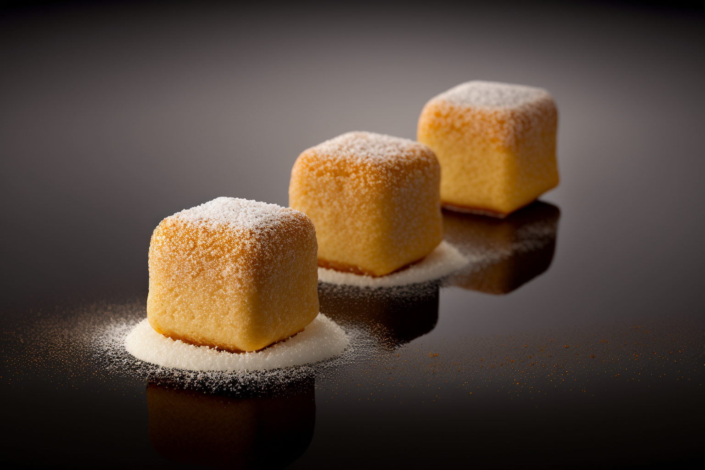

Candied Tennis Balls

Ingredients:
6 tennis balls
2 cups sugar
1/2 cup water
1/4 cup corn syrup
Food coloring (yellow or green)
Edible glitter (optional)
Tennis racket (for serving)
Instructions:
Rinse the tennis balls thoroughly to remove any dirt or debris.
In a large saucepan, combine the sugar, water, and corn syrup. Heat the mixture over medium heat, stirring constantly, until the sugar has dissolved.
Increase the heat to high and bring the mixture to a boil.
Add a few drops of food coloring to the mixture and stir until the color is evenly distributed.
Gently lower the tennis balls into the boiling syrup, making sure they are completely submerged. Reduce the heat to low and simmer for 30 minutes.
After 30 minutes, remove the saucepan from the heat and allow the tennis balls to cool in the syrup for at least 2 hours.
Use a slotted spoon to remove the tennis balls from the syrup and place them on a wire rack to dry.
Once the tennis balls are dry, roll them in edible glitter (if using) for added sparkle.
Serve the Candied Tennis Balls on a tennis racket for added silliness.
Enjoy your silly and unusual Candied Tennis Balls! Just make sure no one tries to hit them with a real racket.